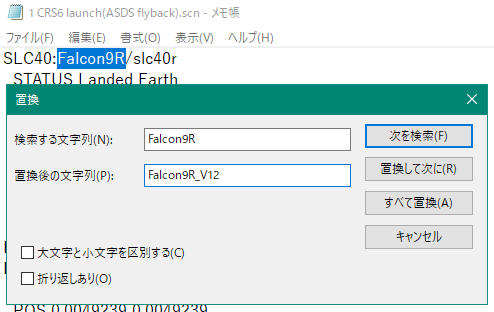
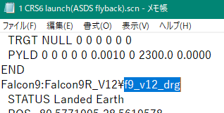

Falcon9 + Dragon宇宙船のインストール (2010)
Orbiter2010にSpaceX Falcon9とDragon宇宙船をインストールする手順について解説します。
ダウンロード
インストール
ダウンロードしたファイルを解凍して、中身をOrbiterフォルダに上書き。
シナリオの書き換え
Falcon9R v1.2とDragon DLLを組み合わせる場合、打ち上げシナリオを書き換える必要があります。※
※Dragon DLLはひとつ前の世代のFalcon9 MODに合わせて作られているため
Scenarios\Dragon1\CRS6フォルダを開く。
1 CRS6 launch(ASDS flyback).scnをメモ帳などのテキストエディタで開く。
Falcon9RをすべてFalcon9R_V12に書き換える。

f9_drgをf9_v12_drgに書き換える。

上書き保存して、テキストエディタを閉じる。
使用可能なMOD
カナダアーム
Dragon宇宙船でCRS（商業補給サービス）ミッションを行う場合は、カナダアームMODが必要です。